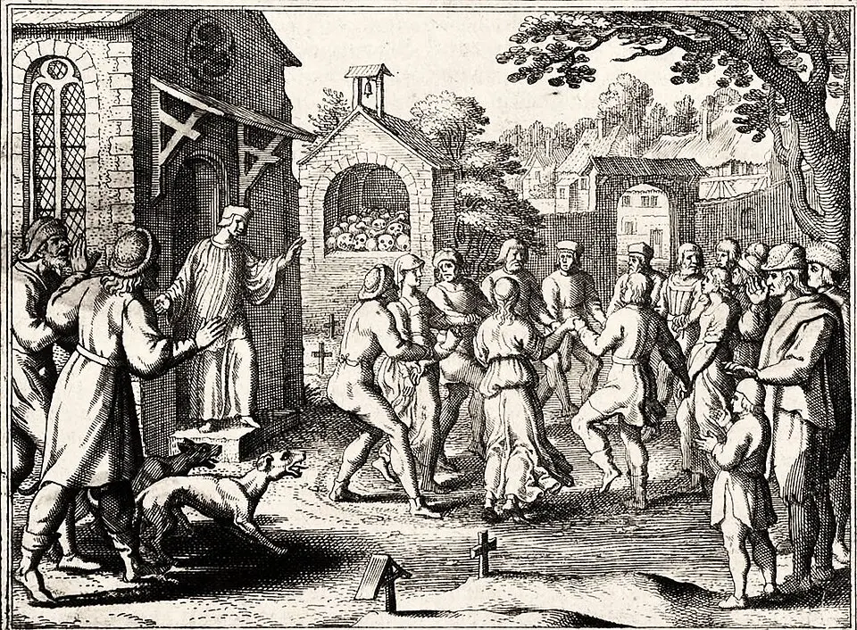
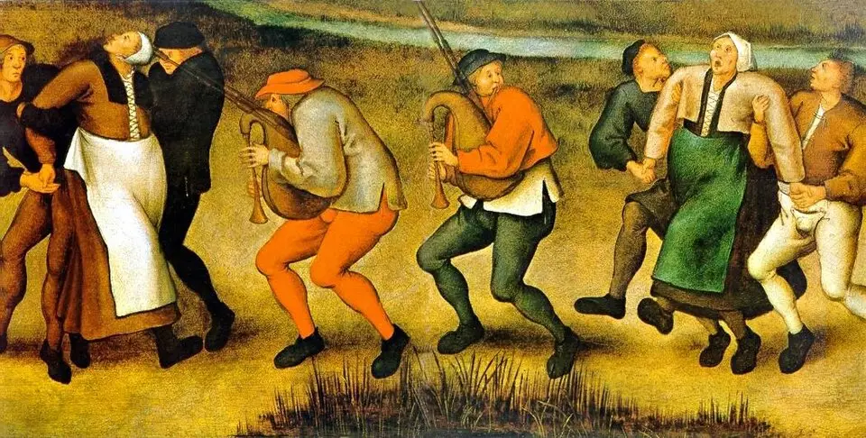
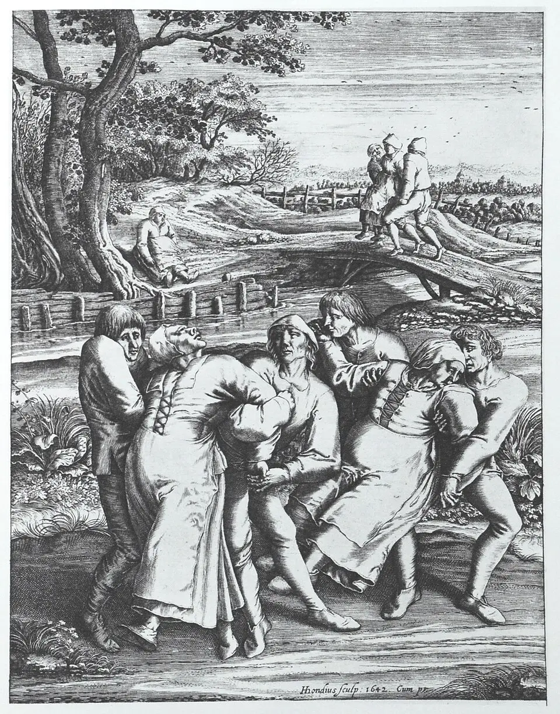

Dịch nhảy múa năm 1518: hàng chục người nhảy không ngừng nhiều ngày liền
Tháng 7 năm 1518, một người phụ nữ ở Strasbourg bắt đầu nhảy giữa phố và không dừng lại. Đến tháng 8, khoảng 50 đến 400 người đã nhảy theo.

Ngày 14 tháng 7 năm 1518, theo cách kể của nhà văn Ned Pennant-Rea, một người phụ nữ tên Frau Troffea bước ra con phố lát đá trước nhà mình ở Strasbourg và bắt đầu nhảy. Không có nhạc. Bà nhảy gần một tuần, chỉ ngừng để ngủ rồi lại nhảy tiếp. Vài người đứng xem bắt chước theo, kể cả chồng bà. Chỉ trong vài ngày, đã có hơn 30 người nhảy.
Một mùa hè không ai dừng được
Strasbourg khi đó thuộc Đế quốc La Mã Thần thánh, nay thuộc Pháp. Đến tháng 8, số người mắc "dịch nhảy múa" được ước tính từ 50 đến 400 người. Khoảng cách lớn giữa hai con số cho thấy chính các nguồn cũng không thống nhất.
Người nhảy được mô tả là co giật, mồ hôi đầm đìa, tay vung loạn, mắt vô hồn. Máu dồn xuống bàn chân sưng phồng và rỉ ra giày. Có người vừa nhảy vừa kêu cứu. Họ ngã xuống vì kiệt sức, đói và khát. Lời khuyên của các thầy thuốc là: cho họ nhảy thêm.
Theo y học thời đó, bệnh do "máu quá nóng", và cách chữa là để người bệnh nhảy cho hết rồi nghỉ cho máu nguội.
Chữa bằng cách cho nhảy thêm


Hội đồng thành phố giao việc cho các thầy thuốc. Theo y học thời đó, bệnh do "máu quá nóng", và cách chữa là để người bệnh nhảy cho hết rồi nghỉ cho máu nguội. Có ghi chép cho rằng thành phố còn sửa sang các hội quán để làm chỗ nhảy, thuê nhạc công và cả những người khỏe mạnh để đỡ người nhảy đứng vững.
Cách chữa này phản tác dụng. Nhiều người nhập cuộc vì sợ thánh Vitus trừng phạt, hoặc muốn được "rũ sạch tội". Hội đồng phải quay sang cấm nhảy múa nơi công cộng.
Bước tiếp theo là tôn giáo. Người nhảy được đưa tới đền thờ thánh Vitus, vị thánh mà người ta tin có thể phạt kẻ có tội bằng cách bắt họ nhảy không ngừng. Theo các ghi chép đương thời, họ đi đôi giày đỏ được rảy nước thánh, mũi và đế giày vẽ hình thánh giá, tay cầm thánh giá nhỏ, giữa khói hương và kinh Latin. Đến đầu tháng 9, dịch lắng dần. Những người còn nhảy cuối cùng được dẫn lên một nhà nguyện trên núi để cầu xin tha tội. Nhưng những gì ta thật sự biết về mùa hè ấy ít hơn những gì hay được kể.
Bằng chứng nói gì


Phần cốt lõi có nguồn đương thời vững chắc: ghi chép của thầy thuốc, bài giảng ở nhà thờ chính tòa, biên niên sử địa phương và văn bản của hội đồng thành phố Strasbourg. Tất cả đều xác nhận có một đợt nhảy múa bắt đầu từ một người phụ nữ và kéo dài nhiều tuần. Trong sáu bản biên niên, bốn bản ghi tên người đầu tiên là Troffea.
Phần còn lại thì mờ hơn. Con số "15 người chết mỗi ngày" hay được nhắc đến không có trong các văn bản của Strasbourg năm 1518. Các nguồn mà sử gia John Waller dẫn về số người chết đều là những bản kể viết về sau. Có người chết hay không, và bao nhiêu, đến nay vẫn chưa biết.
Về nguyên nhân, giả thuyết ngộ độc nấm cựa gà trong lúa mạch đen từng phổ biến, vì chất ergotamine trong nấm này có họ hàng với LSD. Waller bác bỏ trên tạp chí The Lancet: người ngộ độc khó có thể nhảy nhiều ngày liền, và nhiều người không thể phản ứng giống hệt nhau. Ông cho rằng đây là chứng loạn thần tập thể do căng thẳng, ở một vùng vừa trải qua đói kém và dịch bệnh, nơi người ta tin vào lời nguyền của thánh Vitus. Và Strasbourg không phải nơi đầu tiên gặp chuyện này.
Không phải lần đầu
Strasbourg 1518 chỉ là đợt nổi tiếng nhất. Ngày 24 tháng 6 năm 1374, một đợt lớn bùng ra ở Aachen rồi lan sang Cologne, Metz, Utrecht và chính Strasbourg. Năm 1418, Strasbourg lại có người nhảy. Năm 1428 ở Schaffhausen, một tu sĩ được ghi là đã nhảy đến chết. Waller lưu ý gần như mọi đợt đều xảy ra dọc sông Rhine và sông Moselle.
Thầy thuốc Paracelsus là người đặt ra chữ "choreomania", ghép từ tiếng Hy Lạp choros (nhảy múa) và mania (điên). Tên dân gian "điệu nhảy thánh Vitus" về sau được y học thế kỷ 17 dùng cho một bệnh thần kinh có thật, nay gọi là chứng múa giật Sydenham. Nhiều thế kỷ sau, câu chuyện ấy lại lên màn ảnh và vào âm nhạc.
Dư âm đến hôm nay
Năm 2020, đạo diễn Jonathan Glazer làm phim ngắn Strasbourg 1518. Năm 2022, ban nhạc Florence and the Machine phát hành bài "Choreomania" trong album Dance Fever, lấy cảm hứng từ chính sự kiện này.
Việc hàng chục người nhảy múa nhiều tuần ở Strasbourg là chuyện có thật; còn vì sao họ nhảy và có bao nhiêu người chết thì vẫn là câu hỏi mở.